Biografia
Jonna Emily Lee Nilson, mais conhecida como Jonna Lee, nasceu em 3 de outubro de 1981 na Suécia.
Atualmente reside em Londres e possui dois projetos audiovisuais: iamamiwhoami e ionnalee.
Jonna Lee é uma artista independente que acredita que, para criar livremente, precisa se manter nas
margens da indústria fonográfica. Por isso, desde o início do seu primeiro projeto audiovisual,
iamamiwhoami, ela busca produzir livremente oferecendo todo o seu conteúdo de forma gratuita na
internet, através do Youtube. A força que faz ecoar sua voz é construída através da sua audiencia
que, assim como ela, costuma ser bastante engajada em manter seu propósito de forma
independente.
Seu conteúdo é, em grande parte, audiovisual. Jonna Lee acredita que a forma ideal de consumir o seu
produto é através de diversas vertentes artísticas, dentre elas a sonora e visual. Por isso, com o
tempo, se dedicou a treinar suas habilidades não só como música, mas também como diretora, editora e
produtora de conteúdos audiovisuais.
Carreira
Jonna Lee lançou o seu primeiro álbum ainda adolescente, em 1998. O seu primeiro trabalho solo foi
com o álbum "10 Pieces, 10 Bruises", lançado em 10 de outubro de 2007.
Em setembro de 2008, ela lançou um EP chamado "This War" e, em seguida, um álbum chamado "This is
Jonna Lee", em fevereiro de 2009.
Neste mesmo ano, uma movimentação peculiar iniciou-se no youtube. Uma série de vídeos enigmáticos,
com características de teaser e títulos com sequencias numéricas começaram a surgir na rede social.
O burburinho em volta era sobre quem estaria por trás daqueles vídeos. Posteriormente, descobriu-se
através do lançamento do seu primeiro vídeo, "b", que se tratava de Jonna Lee com o seu mais novo
projeto audivisual (e completamente diferente), iamamiwhoami. Desde então, iamamiwhoami lançou 3
álbuns (bounty, kin e BLUE) e realizou 2 shows para internet ("In Concert" e "CONCERT IN BLUE").
Após iamamiwhoami, Jonna Lee iniciou um projeto solo chamado "ionnalee", que até agora já conta com
um music film (Everyone Afraid to be Forgotten) e, em maio de 2019, ganhará um novo álbum chamado
"Remember the Future".
Fotos
 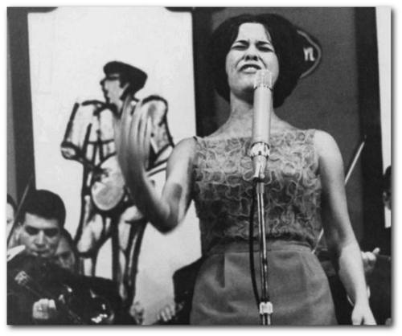
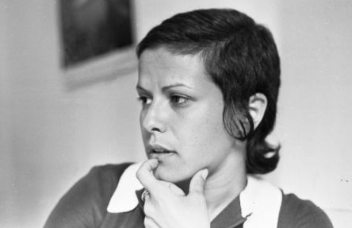
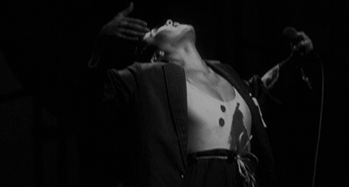
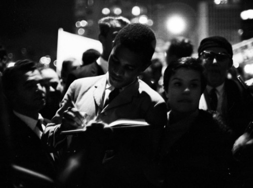
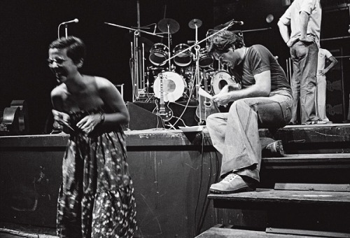
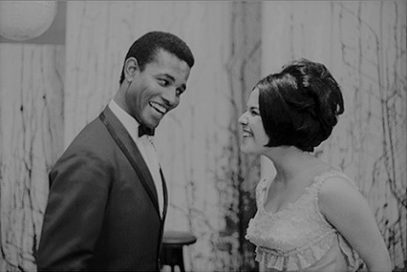
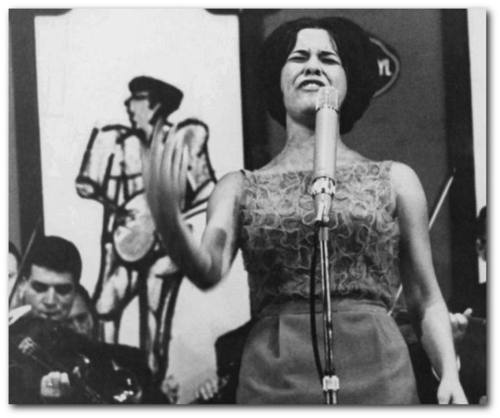
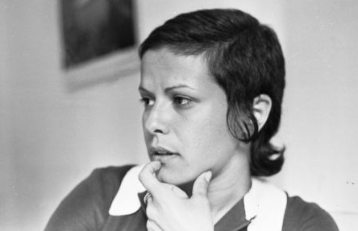
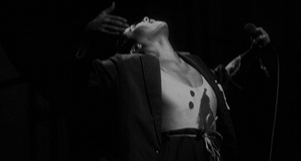
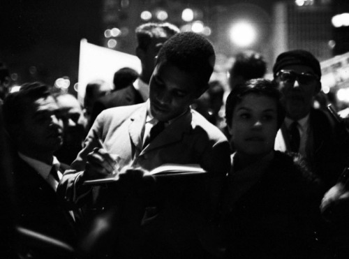
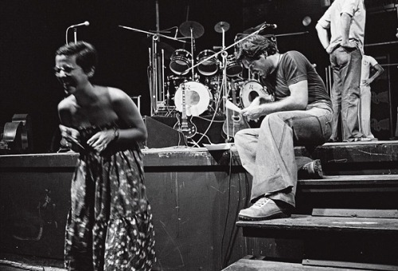
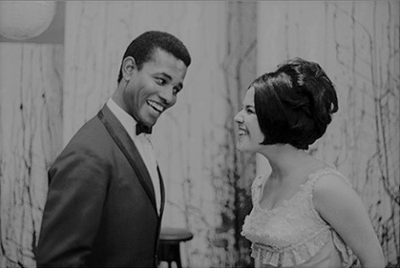

Autora
{Larissa Medeiros}
Publicitária por formação e Desenvolvedora Front-End por amor. Aluna da quinta turma online de Front-End da {reprograma}. Saiba mais sobre mim aqui.